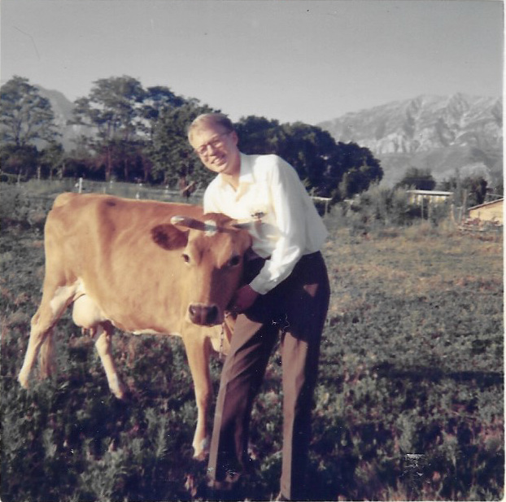
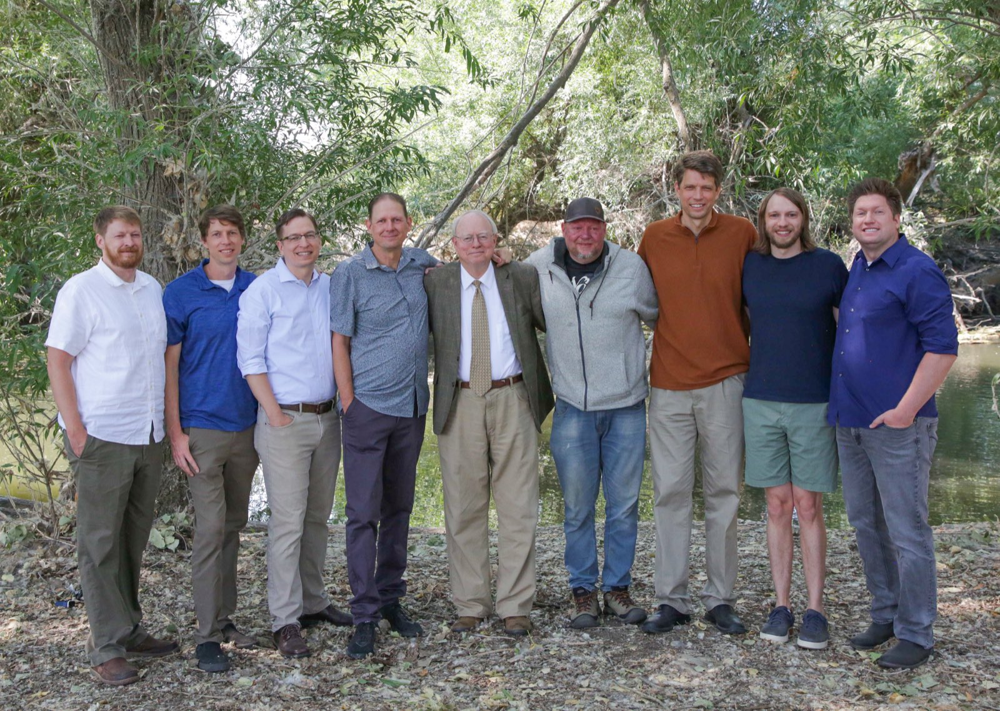
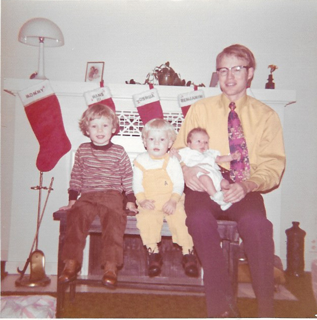

Before he was a candidate, Hans Andersen was a son, a soldier, a scoutmaster, a father of eight, a farmer, and his neighbors' accountant. This is his story.
Hans grew up as one of eleven children, in a home where hard work wasn't a virtue you talked about — it was just what you did before supper. He has lived most of his life in Orem, and he'll tell anyone who asks: he loves this place. The values of that big family — thrift, honesty, carrying your own weight, and looking after your neighbor — became the compass for everything that followed.
He served his country in the United States military, and brought those habits of duty and discipline home with him to Utah County.

"A man's property is his life. It is what he spends his productive life to obtain."
— H. Verlan Andersen, Hans's father, in The Great and Abominable Church of the Devil
Hans raised eight sons, many of whom still live in Utah County. Today he's a grandfather who measures wealth in grandchildren, and summer by what's ripe: he still hand-picks the cherries, apricots, grapes, and plums from his own orchard.
The farm isn't a hobby — it's a philosophy. It's why he fought for a neighborhood pumpkin farmer against city hall, and why he believes government should protect the people who grow things, build things, and fix things.
For decades, Hans ran his church's scouting program, guiding generations of young men — including his own sons — through knots, campouts, and character. Ask around Orem and you'll find grown men who first learned self-reliance from Scoutmaster Andersen.
That same instinct for service carried him to the Orem City Council, where he became known as the member who did his homework and said what others only thought.
Eight sons, a growing crowd of grandchildren, an orchard that keeps bearing fruit, and a community that still knocks on his door every tax season — Hans's story isn't a finished book. This page is built to grow with it, chapter by chapter.

A childhood of thrift. A military tour of duty. Forty years of balancing other people's books, honestly. An orchard that only bears fruit if you tend it. A family raised to carry its own weight. Every chapter of Hans's life taught the same lesson: take care of what's entrusted to you. Utah County's checkbook would be in careful hands.